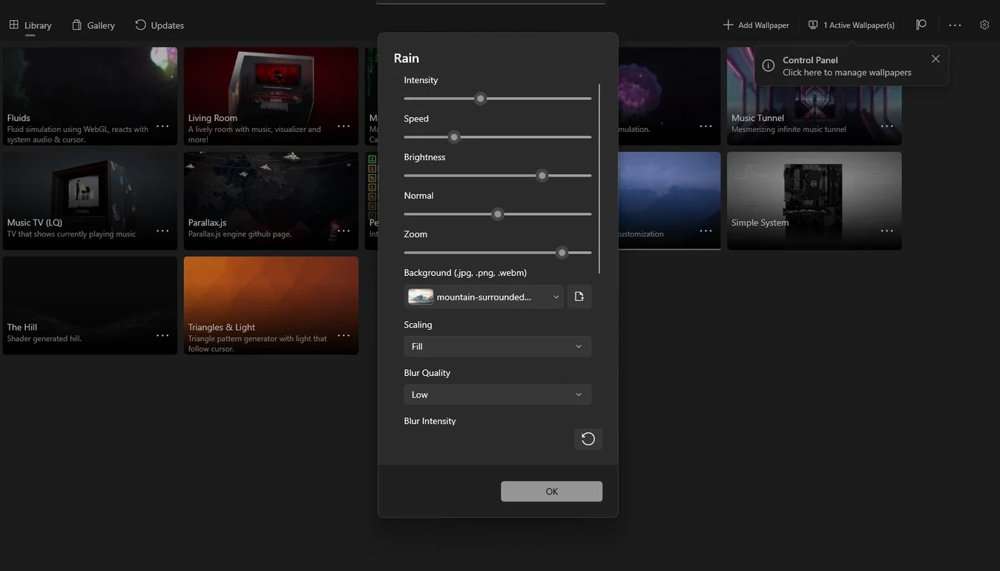
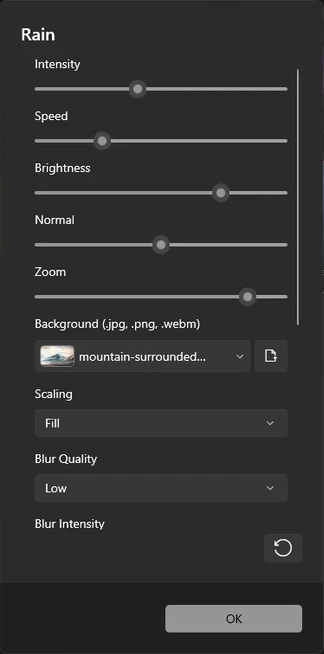

Live wallpaper for Windows 10 and 11
Free live wallpaper software that turns a video, a GIF or a website into your desktop background. Download the ZIP, run it and drag in a file.
Download for WindowsView on SourceForge
Portable, no installation. Windows 10 and 11. Open source.

Use a video, GIF or website as wallpaper
Windows background settings stop at pictures and slideshows. This app adds the animated wallpaper Windows 11 does not offer on its own, and you choose what plays behind your icons.
Video as wallpaper
Use any clip as a moving desktop wallpaper. Playback is hardware accelerated, so the video stays smooth. How to set a video as wallpaper.
GIF as wallpaper
Windows shows a GIF as a still picture. Here it keeps playing, which gives you GIF wallpaper on Windows 11 and Windows 10. How to set a GIF as wallpaper.
Website as wallpaper
Drag in a link to use a webpage as wallpaper.
Interactive live wallpaper
If you want dynamic wallpaper for PC, web wallpapers can respond to your cursor and to the audio playing on your system. You can also run Unity or Godot games as your background.
How to set live wallpaper on Windows 11
The live wallpaper for PC download is a single ZIP. It is a live wallpaper Windows 11 and Windows 10 users can run from any folder.
- Download the ZIP from SourceForge, extract it to any folder and run the app. There is nothing to install.
- Drag a video, a GIF or a link onto the window to set it. You can also click Add Wallpaper.
- Your animated desktop background starts playing and is kept in your Library. The steps are the same on Windows 10.
Adjust each wallpaper
Wallpapers can come with their own settings. The rain wallpaper in this picture, for example, has sliders for intensity, speed, brightness and zoom, and lets you swap its background image.
Your wallpapers sit together in the Library, so you can switch between them. The Control Panel is where you manage what is running.

Live wallpaper for low end PC and laptop
A wallpaper should not cost you frame rate. Playback pauses by itself when you launch a fullscreen game, and CPU and GPU usage drops near zero until you are back on the desktop.
The same happens when a laptop runs on battery. That makes this lightweight live wallpaper software a sensible choice if your PC has little to spare.
Dual monitor live wallpaper
Multi-monitor support is built in, so one screen does not have to stay static while the other moves. It works as live wallpaper for multiple monitors on Windows 10 and 11.
A video screensaver for Windows 11
Any wallpaper can also run as your screensaver. That gives you a live screensaver for PC without a second app, and your video screensaver on Windows 11 can match your desktop.
A free alternative to Wallpaper Engine
Wallpaper Engine is a paid app on Steam. If you are comparing apps like Wallpaper Engine and want one that costs nothing, this one has no paid tier and no features behind a paywall.
It is open source live wallpaper for Windows, so you can read the source code on GitHub.
Frequently asked questions
Is this live wallpaper software free?
Yes. It is free and open source under the GPL-3.0 license, with no features locked behind a paywall.
Do I need to install it?
No. It is a portable app: download the ZIP, extract it and run the program.
Which versions of Windows are supported?
Windows 10 and Windows 11. There is no Mac or Linux version.
Can I run live wallpaper on a low end PC?
Playback pauses by itself during a fullscreen game or on battery, which keeps CPU and GPU usage near zero while you need the power for something else. Hardware-accelerated playback handles the rest of the time.
Does it work with two monitors?
Yes. It has multi-monitor support, so it works as dual monitor live wallpaper.
Can I set a website as wallpaper?
Yes. Drag a link onto the app, and the page becomes your background.
Is it an open source Wallpaper Engine?
It is a separate open source project that covers the same idea: video, animated and interactive wallpaper on your desktop.
Get the free live wallpaper for your PC
Download for WindowsWindows 10 and 11. Also on the SourceForge project page.